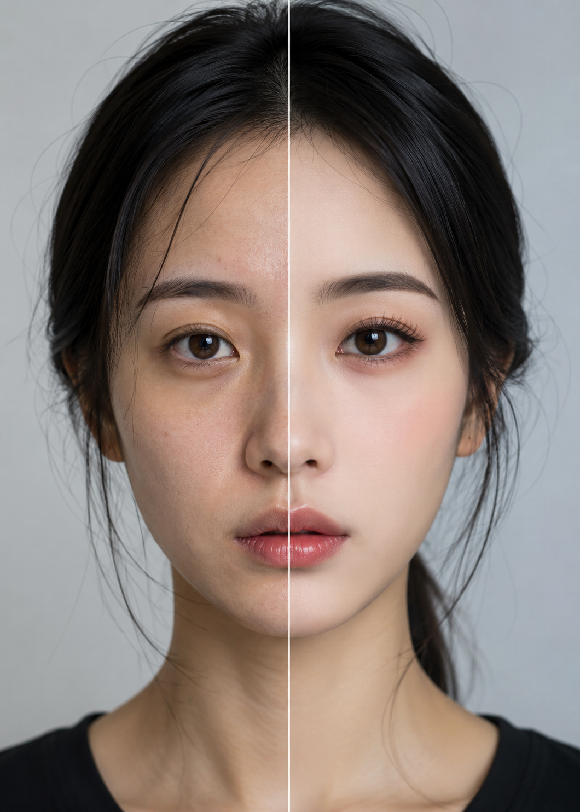

FACE DETECTED
TIKTOK BEAUTY FILTERS
FILTER STATUS: OFF / ON
01 / DIGITAL MIRROR
The Digital Mirror
Photography no longer simply records the face; it prepares it for the screen.
In digital screen culture, the face is no longer captured as a stable image. Through beauty filters, facial detection and real-time editing, photography becomes an interface where the self can be adjusted, corrected and performed.
This page introduces the smartphone camera as a digital mirror: a space where looking, scanning and modifying happen at the same time. Rather than reflecting the face neutrally, the screen transforms it into a surface that can be measured and optimised.
THEORETICAL FRAME
Lev Manovich argues that digital images are no longer fixed photographs, but programmable objects that can be modified, layered and recombined. This helps frame the filtered selfie as an image that is not simply taken, but continuously processed.
Manovich, 2001REFERENCE NOTE
Photography shapes how images are seen and judged.
Sontag, 1977